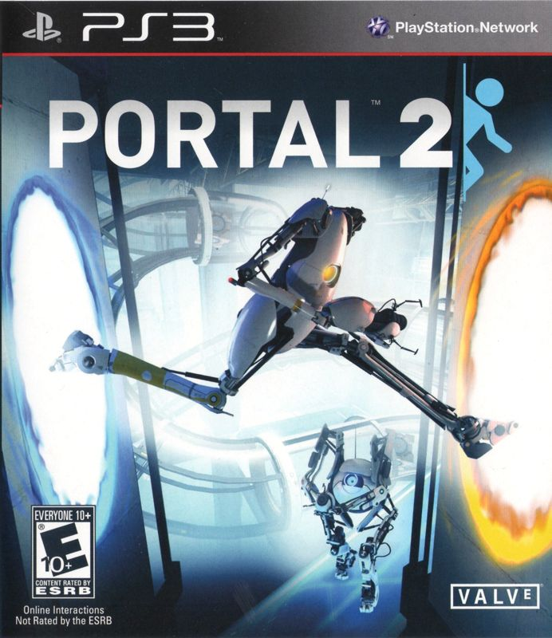

Video Game Review

Portal 2
PlayStation 3
Portal 2, developed and published by Valve Corporation, is a first-person puzzle-platformer game and the
highly anticipated sequel to the critically acclaimed Portal. Released in 2011 for PC, Xbox 360, and
PlayStation 3, Portal 2 built upon the innovative gameplay mechanics and dark humor of its predecessor while
introducing new elements and a richer narrative. In this review, I will discuss various aspects of the game,
including the story, gameplay, graphics, and sound.
Story
Portal 2 continues the story of Chell, who awakens in the now-dilapidated Aperture Science facility after an
extended period of stasis. Guided by Wheatley, a bumbling but well-intentioned AI personality core, Chell
must navigate the treacherous facility while dealing with the return of GLaDOS, the malevolent AI from the
first game. The narrative of Portal 2 is more expansive and character-driven than its predecessor, with new
characters and deeper exploration of the Aperture Science backstory, while still maintaining the series'
signature dark humor.
Gameplay
Portal 2 retains the core gameplay mechanics of the original game, with players using the portal-creating
device to solve increasingly complex puzzles. The sequel introduces new gameplay elements, such as gels that
alter surface properties and tractor beams, which add depth and variety to the puzzle-solving experience.
One of the most significant additions to Portal 2 is the inclusion of a cooperative multiplayer mode, where
two players control the robots Atlas and P-Body, working together to navigate specially designed test
chambers. The cooperative mode offers unique puzzles that require precise coordination and communication,
providing a fresh and engaging challenge.
Graphics
Portal 2 features enhanced graphics compared to its predecessor, with more detailed environments, improved
lighting, and refined character models. The game's visual style retains the minimalist aesthetic of the
original, while the dilapidated state of the Aperture Science facility adds a new layer of visual intrigue.
The portal mechanics remain as visually impressive as ever, with seamless transitions and a convincing sense
of spatial manipulation.
Sound
The sound design in Portal 2 is top-notch, with atmospheric environmental audio and well-executed voice
acting that brings the game's characters to life. Ellen McLain reprises her role as GLaDOS, delivering
another memorable performance, while Stephen Merchant's portrayal of Wheatley adds a new dimension of humor
and personality to the game. J.K. Simmons also lends his voice talent as Cave Johnson, the eccentric founder
of Aperture Science. The game's soundtrack, composed by Mike Morasky, is both atmospheric and fitting,
effectively conveying the mood and tone of each scene.
Conclusion
Portal 2 is a masterful sequel that successfully expands upon the innovative gameplay, engaging story, and
dark humor of the original game. With its enhanced graphics, new gameplay elements, and cooperative
multiplayer mode, Portal 2 offers a satisfying and rewarding experience for fans of the first game and
newcomers alike. If you enjoyed the mind-bending puzzles and unforgettable characters of Portal, Portal 2 is
an essential addition to your gaming library.
Did you enjoy my review of this video game? Check out one of my favorite game reviews below or see a
list of my reviews!
More importantly, I'm always looking for new music to enjoy. Let
me know what you're currently listening to!
My Favorites
Read why these albums are my all-time favorites!